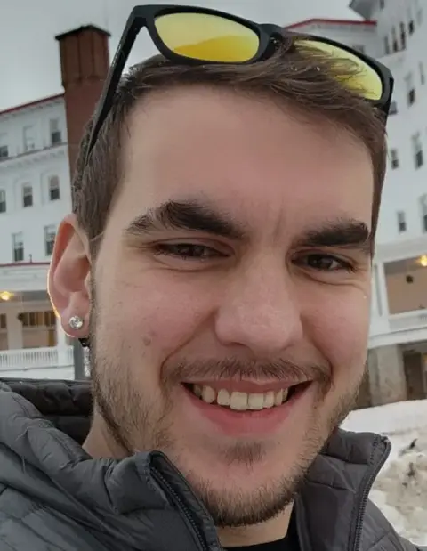

How much parser does a small language need?
Recursive descent, deliberate constraints, and a preference for errors that can be explained.
Read the study ↗David Huson · Software engineer
I build healthcare data platforms, and spend much of my time making complicated processes easier to understand and recover.
Selected work ↓
Selected work and the questions behind it.
Recursive descent, deliberate constraints, and a preference for errors that can be explained.
Read the study ↗Designing healthcare ingestion around repeatable loads and clear failure boundaries.
Letting the workload determine the platform, and knowing when to reconsider.
About David
I'm a Lead Software Engineer in Fort Worth, Texas. I work on healthcare data platforms, from event-driven ingestion on AWS to PostgreSQL warehouses. I care about understanding failure, making recovery repeatable, and explaining the decisions behind the system.
Outside software, I cook, play video games, and spend probably too much time watching educational YouTube. I like debugging alongside people and talking through the reasoning.
Connect on LinkedIn ↗